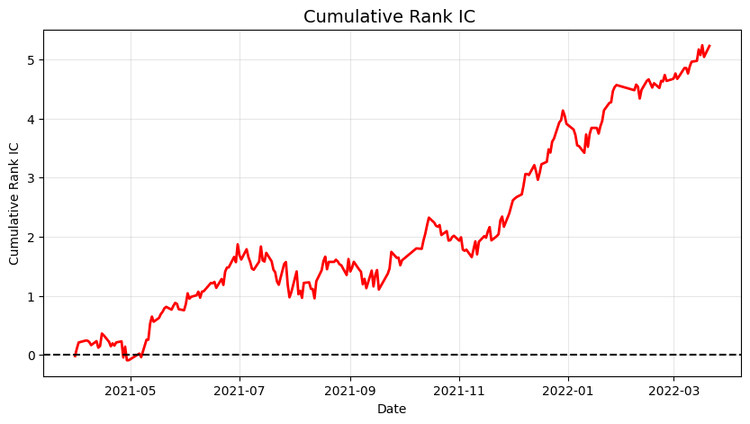

📈 Quant-Alpha-Transformer: 基于深度学习的高频量价 Alpha 因子挖掘系统
本项目构建了一个端到端的量化因子挖掘与回测管线。针对金融时间序列极低信噪比（Low Signal-to-Noise Ratio）的特性，通过消融实验完成了从传统 RNN 到引入 RoPE（旋转位置编码）的大型 Transformer 架构演进，显著提升了截面排序能力（Rank IC）。
🚀 核心实验结论 (消融实验)
在纯样本外测试集（Out-of-Sample）上，不同架构的性能表现如下：
| 模型架构 | 核心机制 | Mean Rank IC | IC IR | 胜率 (Accuracy) | 状态 / 结论 |
|---|---|---|---|---|---|
| Baseline: GRU | 时序平移不变性 | 0.0201 | 0.2266 | 59.75% | 基础稳健，契合滚动窗口短序列 |
| Vanilla Transformer | 绝对位置编码 | 0.0091 | 0.0643 | 53.39% | ❌ 身份错乱破坏平移不变性，过拟合严重 |
| RoPE Transformer | 相对位置编码 | 0.0221 | 0.1594 | 58.47% | 🏆 SOTA。解开长序列注意力封印 |
🛠️ 工程架构与抗噪优化
- 底层内存管线优化：摒弃 Python 原生列表动态拼接，采用
np.empty进行物理内存预分配与单精度降维，成功将百 G 级高维面板数据加载时的内存峰值压降 60%，彻底解决 OOM 崩溃。 - 防未来函数与截面清洗：采用严格的单向前向填充与逐日截面 Z-score 中性化，彻底剥离系统性 Beta 风险与 Lookahead Bias。
- 抗噪损失函数：针对金融数据中极多的异常“毛刺”特性，采用
SmoothL1Loss(Huber Loss) 替代传统 MSE，大幅增强模型在极端行情下的鲁棒性。
📊 策略表现可视化

图示说明：上图为模型在纯样本外区间（2021年4月 - 2022年3月）的 Cumulative Rank IC 曲线。整体收益曲线呈现稳健向上的趋势，累计 IC 最终突破 5.0。在 2021 年三季度（7月-11月），受极端周期股行情与市场风格剧烈切换影响，模型经历了真实的短期回撤与横盘震荡。但自 2021 年 11 月起，模型展现出极强的自适应与泛化能力，曲线迅速收复失地并走出陡峭的上升趋势，验证了底层抗噪机制（SmoothL1Loss）在应对极端逆风期时的鲁棒性。
🔮 Future Work (架构演进规划)
- 时空双塔架构 (Spatio-Temporal Model)：计划在当前单票时序网络的基础上，引入 Cross-Sectional Transformer（截面注意力层）。
- 内生截面中性化：通过让同一天全市场股票在截面上互相进行 Attention 交互，自发学习行业动量共振与风格轮动，进一步剥离市场共同风险。
💻 快速开始 (Quick Start)
1. 克隆仓库与配置环境
git clone [https://github.com/xueyuchou/Quant-Alpha-Transformer.git](https://github.com/xueyuchou/Quant-Alpha-Transformer.git)
cd Quant-Alpha-Transformer
pip install -r requirements.txt2. 获取数据
本项目使用 Qlib 标准 Alpha158 特征集，请确保已初始化 Qlib 数据：
python -m qlib.run.get_data qlib_data --target_dir ~/.qlib/qlib_data/cn_data --region cn3. 运行主控脚本
python train.py